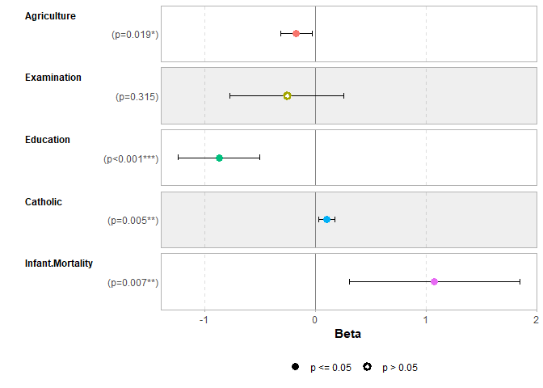
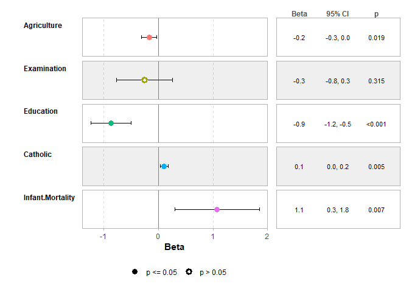
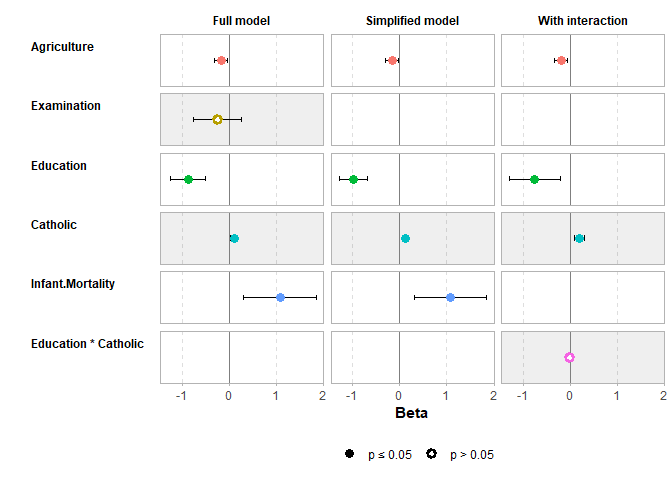
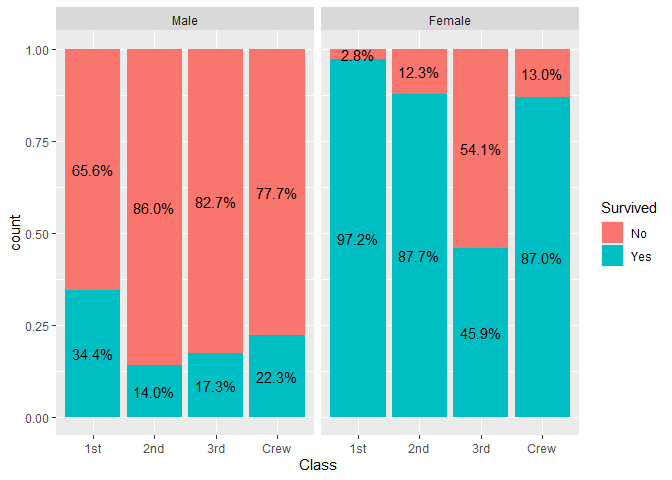
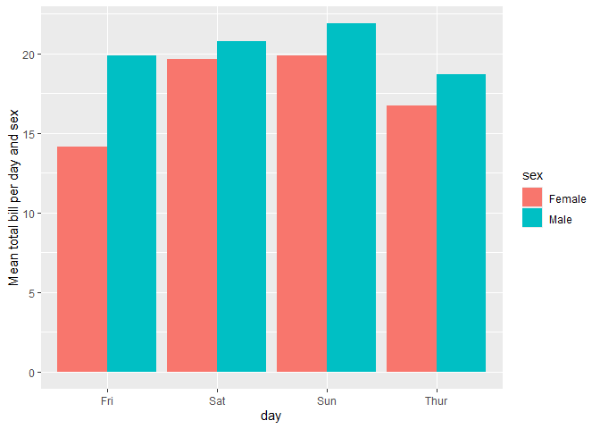
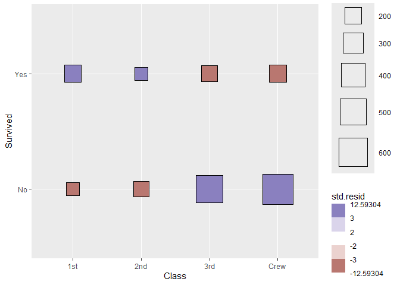
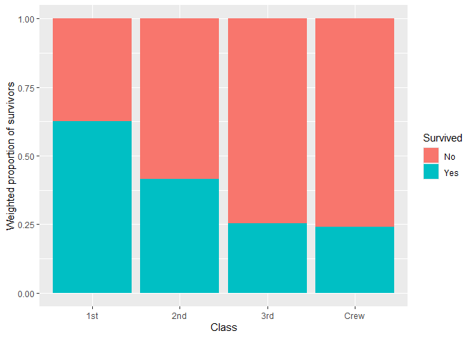

The ggstats package provides new statistics, new geometries and new positions for ggplot2 and a suite of functions to facilitate the creation of statistical plots.
Installation & Documentation
To install stable version:
install.packages("ggstats")Documentation of stable version: https://larmarange.github.io/ggstats/
To install development version:
remotes::install_github("larmarange/ggstats")Documentation of development version: https://larmarange.github.io/ggstats/dev/
Plot model coefficients
library(ggstats)
mod1 <- lm(Fertility ~ ., data = swiss)
ggcoef_model(mod1)
ggcoef_table(mod1)
Comparing several models
mod2 <- step(mod1, trace = 0)
mod3 <- lm(Fertility ~ Agriculture + Education * Catholic, data = swiss)
models <- list(
"Full model" = mod1,
"Simplified model" = mod2,
"With interaction" = mod3
)
ggcoef_compare(models, type = "faceted")
Compute custom proportions
library(ggplot2)
ggplot(as.data.frame(Titanic)) +
aes(x = Class, fill = Survived, weight = Freq, by = Class) +
geom_bar(position = "fill") +
geom_text(stat = "prop", position = position_fill(.5)) +
facet_grid(~Sex)
Compute weighted mean
data(tips, package = "reshape")
ggplot(tips) +
aes(x = day, y = total_bill, fill = sex) +
stat_weighted_mean(geom = "bar", position = "dodge") +
ylab("Mean total bill per day and sex")
Compute cross-tabulation statistics
ggplot(as.data.frame(Titanic)) +
aes(
x = Class, y = Survived, weight = Freq,
size = after_stat(observed), fill = after_stat(std.resid)
) +
stat_cross(shape = 22) +
scale_fill_steps2(breaks = c(-3, -2, 2, 3), show.limits = TRUE) +
scale_size_area(max_size = 20)
Plot survey objects taking into account weights
library(survey, quietly = TRUE)
#>
#> Attachement du package : 'survey'
#> L'objet suivant est masqué depuis 'package:graphics':
#>
#> dotchart
dw <- svydesign(
ids = ~1,
weights = ~Freq,
data = as.data.frame(Titanic)
)
ggsurvey(dw) +
aes(x = Class, fill = Survived) +
geom_bar(position = "fill") +
ylab("Weighted proportion of survivors")
Plot Likert-type items
library(dplyr)
#>
#> Attachement du package : 'dplyr'
#> Les objets suivants sont masqués depuis 'package:stats':
#>
#> filter, lag
#> Les objets suivants sont masqués depuis 'package:base':
#>
#> intersect, setdiff, setequal, union
likert_levels <- c(
"Strongly disagree",
"Disagree",
"Neither agree nor disagree",
"Agree",
"Strongly agree"
)
set.seed(42)
df <-
tibble(
q1 = sample(likert_levels, 150, replace = TRUE),
q2 = sample(likert_levels, 150, replace = TRUE, prob = 5:1),
q3 = sample(likert_levels, 150, replace = TRUE, prob = 1:5),
q4 = sample(likert_levels, 150, replace = TRUE, prob = 1:5),
q5 = sample(c(likert_levels, NA), 150, replace = TRUE),
q6 = sample(likert_levels, 150, replace = TRUE, prob = c(1, 0, 1, 1, 0))
) %>%
mutate(across(everything(), ~ factor(.x, levels = likert_levels)))
gglikert(df)